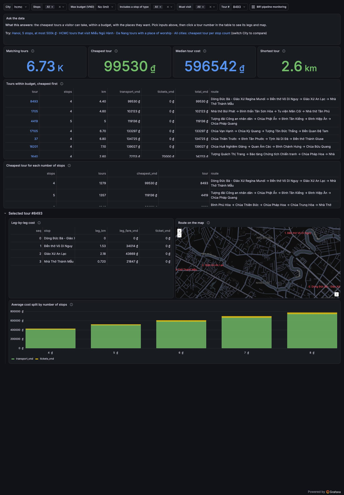
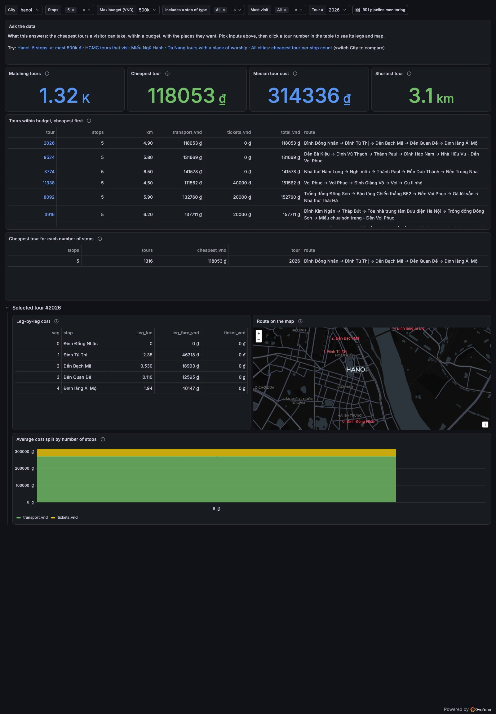
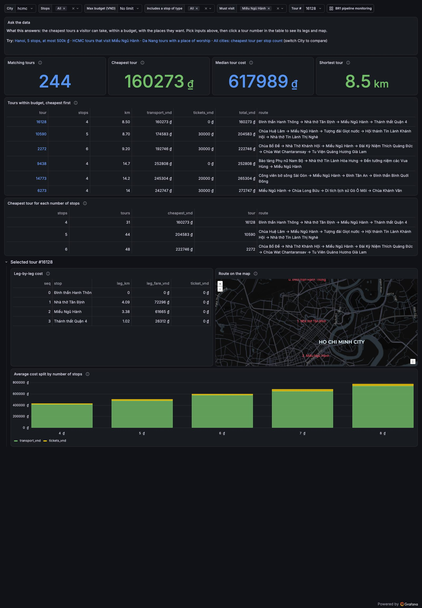
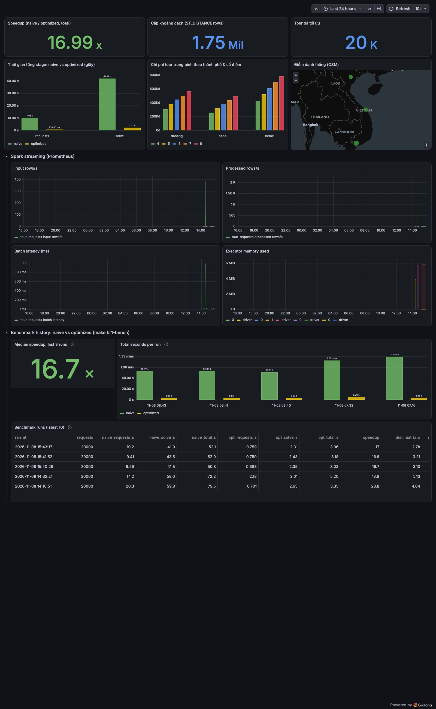
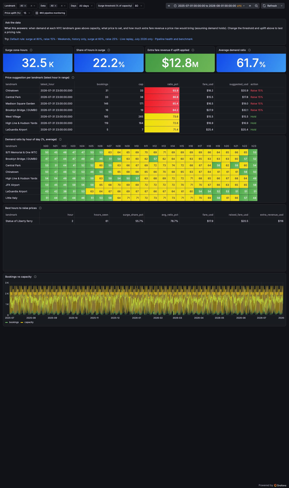

BR1 & BR2: ghi chú báo cáo và trình bày
2026-11-10. CO5173 Data Engineering, chủ đề Big Data Processing Optimization. Bản HTML của docs/result/br1-br2-report-notes.md và docs/result/br2/result-stream-benchmark.md.
Nguồn số liệu: docs/result/br1/result-benchmark.md, docs/result/br2/result-benchmark.md, docs/result/br1-br2-benchmark-report.html. Số nào chưa đo ghi "(chưa đo)".
Bảng 1: hai ô cần điền
| BR | Cột | Nội dung dán vào ô |
|---|---|---|
| BR1 | Chế độ xử lý | Batch + Stream |
| BR2 | Giải pháp so sánh | Batch: Spark đọc parquet thô vs data lake phân vùng; Stream: Spark Structured Streaming vs ClickHouse Kafka engine + Materialized View |
- BR1 là Batch + Stream: batch warm-up dựng
dim_landmarkvàdist_matrix(1,954 landmark, 1,746,644 cặp); benchmark naive vs optimized chạy ở dạng batch. Request tour đi qua Kafka → Spark Structured Streaming (querytour_requests, trigger 5 s) → ClickHousetour.fact_tour. - BR2 có hai so sánh. Batch: capacity baseline đọc parquet thô vs lake phân vùng (đã đo, 1.90x). Stream: cùng metric với BR3/BR4 (
tests/br2/benchmark_stream.py), đã đo: ClickHouse MV nhanh hơn 8.7x backlog, Spark giữ vai trò batch baseline + watermark. - BR2 chính là Stream: Kafka
tlc.trips→ window 1 h, watermark 2 h (querydemand_ratio, trigger 10 s) → ClickHousepricing.demand_ratio_hourly; kèm một baseline batch chạy một lần.
Giải thích thuật ngữ, baseline và nguồn dữ liệu
Thuật ngữ trong bảng benchmark BR1
- Stage: một bước của job được bấm giờ riêng bằng
time.perf_counter(hàmtimed()trongjobs/br1_tour_route/job.py), đơn vị giây, kèm số dòng. Kết quả ghi vào bảngtour.job_run, sau đó harnesstests/br1/benchmark.pyđọc lại. - requests: dựng 20,000 yêu cầu tour giả lập ngay trong Spark (
spark.range, chọn thành phố xoay vòng, 4-8 điểm dừng chọn bằng hash trên landmark của thành phố), join với bảng landmark để lấy tọa độ và giá vé, rồi ghi parquetdata/br1/lake/tour_requests/mode=<naive|optimized>. Naive dùng shuffle join, optimized dùng broadcast join. Số dòng bằng số request. - solve: giải lộ trình cho từng request bằng nearest-neighbour từ điểm đầu, sau đó 2-opt tới khi không còn cải thiện (
solve_order); tính km, cước taxi (11,000 + 15,000 × km VND) và tiền vé; ghilake/fact_tour/mode=<mode>rồi đếm lại. Thuật toán giống nhau ở hai bản, khác ở cách chạy: naive dùng Python row UDF (một lần gọi Python cho mỗi request, khoảng cách lấy từ shuffle join vớidist_matrix1.7 triệu cặp); optimized dùngmapInPandas(một lô nhiều request qua Arrow, tọa độ được broadcast, haversine vector hóa bằng numpy). - total: requests cộng solve. Đây không phải wall-clock: không gồm warm-up và không gồm thời gian khởi động spark-submit (wall-clock mỗi rep khoảng 85.8 s, trong đó total của optimized chỉ 3 s).
- Warm-up (chỉ ở optimized, không tính vào total): landmarks (đọc CSV 1,954 điểm, 4.4 s), dist_matrix (1,746,644 cặp khoảng cách, 3.1 s), sink_clickhouse (ghi 1,748,598 dòng vào ClickHouse cho dashboard và bản đồ, 18.1 s). Đây là chi phí dựng data lake một lần, không phải chi phí xử lý request.
- Rep: một lần chạy trọn job (naive rồi optimized, cùng input). Benchmark chạy 3 rep, báo median (min-max).
- Speedup: cột Speedup = median naive / median optimized. Số headline 17.0x = 52.066 / 3.064. Nếu lấy median của tỷ lệ từng rep (16.75x, 16.62x, 16.99x) thì được 16.75x. Hai cách đều đúng, cần nêu rõ cách tính khi trình bày.
Naive vs Optimized: vì sao có hai bản
- Đề tài chấm "DE performance" và yêu cầu ít nhất một giải pháp so sánh cho mỗi BR. Naive là baseline: cách viết PySpark đầu tiên, đúng kết quả, chưa tối ưu. Optimized là giải pháp chính. Hai bản cùng input, cùng thuật toán, cùng output (xem mục Tính đúng đắn), nên chênh lệch thời gian chỉ do kỹ thuật xử lý, đúng chủ đề "Big Data Processing Optimization".
- Naive không cố tình làm chậm; mỗi lựa chọn là mặc định hoặc cách viết tự nhiên. Python UDF là cách dễ nhất để gọi hàm Python từ Spark;
spark.sql.shuffle.partitions=200là mặc định của Spark; AQE tắt là mặc định trước Spark 3.2; auto-broadcast bị tắt (autoBroadcastJoinThreshold=-1) để Spark không tự tối ưu hộ và đo được join thuần shuffle.
| Điểm nghẽn ở naive | Kỹ thuật ở optimized | Vì sao nhanh hơn | Stage hưởng lợi |
|---|---|---|---|
| Python row UDF: mỗi request serialize từ JVM sang Python rồi ngược lại, 20,000 lần gọi Python | mapInPandas + numpy | Một lô nhiều dòng đi qua Arrow, haversine tính vector hóa, số lần gọi Python giảm từ 20,000 xuống số partition | solve (17.8x) |
Shuffle join request với landmark và với dist_matrix: băm, ghi đĩa, trao đổi dữ liệu qua 200 partition | Broadcast bảng nhỏ (1,954 landmark với tọa độ) tới executor, join tại chỗ; tính khoảng cách ngay bằng haversine thay vì tra 1.7 triệu cặp | Bỏ hẳn bước shuffle và scan dist_matrix | requests (12.5x) và solve |
| 200 shuffle partitions cho 20,000 dòng: 200 task nhỏ, chi phí lập lịch lớn hơn việc thật | 8 partitions | Mỗi task đủ việc, ít overhead | cả hai stage |
| AQE tắt: plan cố định từ đầu | AQE bật (coalescePartitions) | Spark gộp partition nhỏ và chọn join ở runtime theo kích thước thật | cả hai stage |
- Cùng ý tưởng cho BR2. Batch: baseline đọc 13 file parquet thô (12 FileScan riêng, không partition pruning) so với lake phân vùng theo
service/pickup_month(PartitionFilters + PushedFilters chỉ đọc 16 zone và 5 cột), kết quả 1.90x. Stream: Spark Structured Streaming (giải pháp chính, có watermark/window) so với ClickHouse Kafka engine + Materialized View (giải pháp so sánh, gộp ngay khi insert, không có JVM/Python), kết quả 8.7x backlog và 6.0x RAM.
Baseline là gì trong từng phép so sánh
| Phép so sánh | Baseline (tham chiếu) | Giải pháp đối chiếu | Cùng input | Kiểm tra cùng output |
|---|---|---|---|---|
| BR1 batch | Naive Spark (UDF, shuffle, AQE tắt, 200 partitions) | Optimized Spark (giải pháp chính) | 20,000 request, 4-8 stop, 1,954 landmark, 3 thành phố | mục Tính đúng đắn BR1 |
| BR2 batch | Raw parquet (13 file, 873 MB) | Lake phân vùng (26 file, 460 MB) | 48,950,921 trip, 13 tháng | capacity giống nhau |
| BR2 stream | Spark Structured Streaming (giải pháp chính đang chạy demo) | ClickHouse Kafka engine + MV | 200,000 trip tháng 2026-07, cùng topic | 684/684 window giống hệt |
- Bối cảnh chung của mọi baseline: một laptop macOS, OrbStack Docker, 8 CPU, 8 GB; Spark 4.0 standalone 1 worker (2 core, 2 GB), job dùng 1 core, driver và executor 512 MB; ClickHouse 26.8 giới hạn 1 GB; không có job khác chạy cùng lúc; 3 lần lặp, báo median (min-max). Khi chạy chung BR1 với BR2 trên cùng worker, BR1 dao động 13.9x đến 23.8x, nên báo cáo dùng số chạy riêng.
Nguồn dữ liệu và câu hỏi "stream có real-time không"
- BR1 landmarks: OpenStreetMap qua Overpass API (
scripts/fetch_osm_landmarks.py, endpointoverpass-api.devàoverpass.kumi.systems), 3 thành phố TP.HCM, Hà Nội, Đà Nẵng; lấy tagtourism(attraction, museum, gallery, zoo, theme_park, aquarium, viewpoint, artwork),historic, vàamenity=place_of_worshipcó tên. Script chạy một lần offline, ghidata/br1/landmarks.csv1,954 dòng (commit trong repo, giấy phép ODbL). Giá véticket_vndước lượng từ tagfee/chargehoặc mặc định theo loại, không phải giá thật. - BR1 tour requests (stream demo): giả lập bởi
ingestion/producers/produce_br1.pyvớirandom.Random(42): chọn thành phố, 4-8 điểm dừng từlandmarks.csv,requested_at = now()lúc gửi, topictour.requests, mặc định 20,000 request,--interval 0. Spark đọcstartingOffsets=earliest, 2,000 message mỗi trigger, trigger 5 s. Benchmark BR1 không đi qua Kafka: request được dựng bằngspark.rangetrong job (--bench-only) với cùng tham số 20,000 request, 4-8 stop. - BR2 trips: NYC TLC Yellow Taxi, parquet công khai tải bằng
scripts/download_tlc.shtừhttps://d37ci6vzurychx.cloudfront.net/trip-data/yellow_tripdata_YYYY-MM.parquetvàmisc/taxi_zone_lookup.csv; 13 tháng từ 2025-07 đến 2026-07, 873 MB, nằm ởdata/br2/raw/(gitignore, không commit). Batch Spark dựng lakedata/br2/lake/fact_tripsphân vùngservice/pickup_month(460 MB) vàdim_capacity(P95 booking theo giờ cho mỗi zone, loại ngày, giờ trên 12 tháng). - BR2 stream không phải real-time theo nghĩa feed trực tiếp:
ingestion/producers/produce_br2.pyđọc lake thángBR2_REPLAY_MONTH=2026-07, sort theopickup_datetime, gửi vào Kafkatlc.tripsvới timestamp lịch sử (pickup_datetimeISO UTC), nhanh hết cỡ (--interval 0) hoặc theo--interval. Đây là replay: mô phỏng luồng sự kiện thật bằng dữ liệu lịch sử. Spark xử lý theo event time: window 1 h, watermark 2 h trênpickup_datetime, trigger 10 s, 20,000 message mỗi trigger. - Khách sạn và vendor: không có dữ liệu booking thật. "Booking" là chuyến taxi trả khách tại 16 zone có landmark (proxy cho nhu cầu), capacity là P95 lịch sử, không phải số phòng thật.
- Cách trả lời giảng viên: "Pipeline real-time về kiến trúc (Kafka, Spark Structured Streaming, event-time window và watermark, độ trễ đo được p50 4-7 s), còn nguồn là replay dữ liệu lịch sử công khai vì không có feed taxi hay booking trực tiếp. Đổi producer sang feed thật thì job và bảng không đổi."
BR1 Tour route: nội dung báo cáo
Mục tiêu và người dùng
- Người dùng: du khách chọn tour theo thành phố, số điểm dừng, ngân sách, điểm bắt buộc ghé.
- Mục tiêu: tìm tour có chi phí thấp nhất cho yêu cầu 4-8 điểm dừng ở 3 thành phố; mỗi câu hỏi trả lời tương tác (dưới 0.1 s).
- Ứng dụng: bản đồ Leaflet (http://localhost:8090) và dashboard Grafana
br1-finder.
Pipeline
scripts/fetch_osm_landmarks.py→data/br1/landmarks.csv(1,954 landmark, 3 thành phố).produce_br1.pysinh request (seed cố định, 4-8 điểm dừng) → Kafka topictour.requests.jobs/br1_tour_route/job.py: nạp landmark, dựngdist_matrix(1,746,644 cặp), nạp vào ClickHouse; stream request, giải bằng nearest neighbour + 2-opt, ghitour.fact_tourvàtour.fact_tour_leg.- Sau khi stream chạy, job chạy benchmark naive vs optimized, ghi
tour.job_run.
Giải pháp chính vs giải pháp so sánh
| Naive | Optimized (giải pháp chính) | |
|---|---|---|
| Giải từng request | Python row UDF | mapInPandas + numpy haversine |
| Khoảng cách | shuffle join với parquet dist_matrix | broadcast tọa độ, tính tại chỗ |
| Dựng request | shuffle join | broadcast join |
| Cấu hình Spark | AQE tắt, 200 shuffle partitions | AQE bật, 8 shuffle partitions, Arrow |
Cấu hình đo
- 2026-11-08, macOS, OrbStack Docker 29.8, 8 CPU, 8 GB.
- Spark 4.0 standalone, 1 worker (2 core, 2 GB); job dùng 1 core, driver 512 MB, executor 512 MB,
spark.sql.shuffle.partitions=4. - ClickHouse 26.8 (1 GB), Grafana 13.2.3. Không có việc khác chạy trên cluster Spark.
- 20,000 request (4-8 stop, 3 thành phố), 3 lần lặp, báo median (min-max).
Kết quả
Median giây (min-max) của 3 lần:
| Stage | Naive | Optimized | Speedup |
|---|---|---|---|
| requests | 9.407 (9.286-10.152) | 0.750 (0.683-0.759) | 12.5x |
| solve | 41.914 (41.520-43.460) | 2.351 (2.305-2.430) | 17.8x |
| total | 52.066 (50.806-52.867) | 3.064 (3.034-3.180) | 17.0x |
Từng lần (total):
| Rep | Naive (s) | Optimized (s) | Speedup |
|---|---|---|---|
| 1 | 50.806 | 3.034 | 16.75x |
| 2 | 52.867 | 3.180 | 16.62x |
| 3 | 52.066 | 3.064 | 16.99x |
Warm-up chỉ có ở optimized (không nằm trong "total"):
| Stage | Giây | Số dòng |
|---|---|---|
| landmarks | 4.420 (4.078-4.610) | 1,954 |
| dist_matrix | 3.098 (2.777-3.208) | 1,746,644 pairs |
| sink_clickhouse | 18.094 (17.756-18.467) | 1,748,598 written |
- Speedup cột = tỷ lệ median (17.0x = 52.066 / 3.064); median của tỷ lệ từng lần = 16.75x (16.62-16.99x).
- Chạy chung với BR2 trên worker 2 core: naive 79.5 s và 72.2 s, optimized 3.35 s và 5.20 s (23.8x và 13.9x). Chạy riêng: 16.6-17.0x. Báo cáo số chạy riêng.
Tính đúng đắn
- So từng dòng giữa
mode=naivevàmode=optimizedtrong lake: 20,000 tour ở cả hai. total_cost_vndbằng nhau trên 20,000 tour; tổng 9,444,273,402 VND ở cả hai.total_km: sai lệch tuyệt đối lớn nhất 9e-13.
Khai thác dữ liệu
Tour finder (Grafana br1-finder) và bản đồ có 9 câu hỏi; p50 từng panel 6-16 ms:
| Panel | p50 (ms) | p95 (ms) |
|---|---|---|
| Matching tours | 9.5 | 69.7 |
| Cheapest tour | 10.9 | 12.4 |
| Tours within budget | 15.7 | 52.3 |
| Leg-by-leg cost | 6.2 | 8.1 |
| Route on the map | 7.4 | 11.8 |
- Insight (từ báo cáo HTML): Hanoi có giá vào thấp nhất (79,273 VND) và median thấp nhất (368,453); giá tăng theo số điểm dừng ở mọi thành phố; vận chuyển chiếm khoảng 90.5% giá, vé 9.5% (hợp tác vận chuyển tác động giá nhiều hơn gói vé).
- Hanoi, 5 stop, tối đa 500,000 VND: 1,316 lựa chọn, rẻ nhất 118,053 VND, median 314,336 VND, ngắn nhất 3.11 km.
- Must-see Miếu Ngũ Hành (HCMC): 244 tour, rẻ nhất 160,273 VND.
- Screenshot chèn vào báo cáo (
docs/result/br1/screenshots/):


br1-finder-hcmc.jpg (so sánh thành phố)

br1-finder-hanoi-5stops-500k.jpg (lọc ngân sách)

br1-finder-must-visit.jpg (điểm bắt buộc)

br1-benchmark-panels.jpg (panel benchmark, /d/br1-tour)Nhận xét
- Optimized nhanh hơn 17.0x (tỷ lệ median; từng lần 16.62-16.99x), cùng 20,000 tour. Nguồn gốc: solve 17.8x (UDF từng dòng → vectorized numpy), requests 12.5x (broadcast thay shuffle).
- Sink ClickHouse (18.1 s) gấp khoảng 6 lần toàn bộ compute của optimized (3.06 s). Bước tối ưu tiếp:
write_partitionssong song hoặc insert native format. - Streaming demo: đỉnh 2,743 requests/s, độ trễ micro-batch trung bình 399 ms (không phải benchmark có kiểm soát).
Hạn chế
- 3 lần lặp trên một laptop; p95 từ 10 mẫu.
- "Total" không gồm warm-up của optimized.
- Số streaming lấy từ demo.
- Speedup phụ thuộc việc cô lập cluster.
- Khoảng cách đường chim bay (haversine), cước taxi phẳng 11,000 VND + 15,000 VND/km, nhu cầu là dữ liệu sinh.
- Benchmark nạp lại
tour.dim_landmarkvàtour.dist_matrixkhoảng 18 s mỗi lần lặp: bản đồ có thể rỗng, chạy khi không ai dùng dashboard.
BR2 Dynamic pricing: nội dung báo cáo
Mục tiêu và người dùng
- Người dùng: quản lý giá / vận hành taxi (NYC TLC yellow taxi, 16 landmark zone).
- Mục tiêu: tìm khung giờ nhu cầu vượt 80% công suất và gợi ý tăng giá 15%.
- Ứng dụng: Grafana
br2-advisor(Pricing advisor) với luật giá chỉnh được.
Pipeline
- Baseline batch (một lần): P95 số booking theo giờ cho mỗi zone, loại ngày, giờ, trên 12 tháng (2025-07 đến 2026-06) = capacity.
- Replay producer đọc lake → Kafka
tlc.trips. - Spark Structured Streaming: window 1 h, watermark 2 h, update mode, trigger 10 s, query
demand_ratio→ ClickHousepricing.demand_ratio_hourly(ReplacingMergeTree). - Demand ratio = booking trong giờ / capacity; vượt ngưỡng (mặc định 80%) thì gợi ý tăng 15%.
Giải pháp chính vs giải pháp so sánh
- So sánh 1 (batch): parquet thô theo tháng vs lake chuẩn hóa phân vùng
servicevàpickup_month. - So sánh 2 (stream): Spark Structured Streaming (chính) vs ClickHouse Kafka engine + Materialized View (thay thế), cùng pattern với BR3/BR4.
| Raw files | Partitioned lake | |
|---|---|---|
| Input | parquet thô theo tháng | lake chuẩn hóa, phân vùng service và pickup_month |
| Code | run_bench, variant raw | variant lake |
Cấu hình đo
- 2026-11-08, macOS, OrbStack Docker 29.8, 8 CPU, 8 GB; Spark 4.0 (1 worker 2 core, 2 GB), job 1 core, 512 MB,
spark.sql.shuffle.partitions=4. - 3 lần lặp, median (min-max); thứ tự đổi luân phiên raw,lake / lake,raw / raw,lake để giảm thiên lệch page cache.
- Kết quả ghi
pricing.job_run; benchmark không động vào serving data.
Kết quả
So sánh batch: raw vs lake
Median giây (min-max) của 3 lần:
| Stage | Raw files | Lake | Speedup |
|---|---|---|---|
| hourly | 13.66 (11.47-14.45) | 6.71 (6.65-7.07) | 2.04x |
| capacity | 0.61 (0.42-0.81) | 0.35 (0.27-0.77) | |
| total | 14.08 (12.08-15.26) | 7.42 (6.98-7.42) | 1.90x |
| Rep | Raw (s) | Lake (s) | Speedup |
|---|---|---|---|
| 1 | 12.08 | 6.98 | 1.73x |
| 2 | 14.08 | 7.42 | 1.90x |
| 3 | 15.26 | 7.42 | 2.06x |
- Lake build một lần: 44.53 s, 48,950,921 dòng trip (13 tháng).
- Storage: raw 873 MB (13 file) vs lake 460 MB (26 file parquet, 53% của raw).
- Break-even nếu chỉ dựng lake cho benchmark: 44.53 / (14.08 - 7.42) = khoảng 7 lần rebuild. Pipeline thật vẫn phải ghi lake (replay producer đọc nó) nên không phải chi phí thêm.
- Vì sao lake nhanh (
explain(),logs/bench/br2-rep1.log):PartitionFilterstheoservicevàpickup_month;PushedFilters: In(do_location_id, [16 zone ids]); chỉ đọc 5 cột. Raw: 12 FileScan riêng, không partition pruning, filter zone không đẩy xuống.
So sánh stream: Spark vs ClickHouse MV
Đo bằng tests/br2/benchmark_stream.py + tests/br2/clickhouse_br2.sql; tiêu chí như BR3/BR4.
| Backlog end-to-end (s) | First row (s) | rows/s | Peak RAM (MiB) | Mean CPU (%) | Live 1,000 msg/s 60 s: p50 / p95 / p99 (ms) | Correctness join (location_id, window_start) | |
|---|---|---|---|---|---|---|---|
| Spark Structured Streaming | 96.99 [92.16 - 101.58] | 17.17 [15.72 - 17.36] | 2,062 [1,969 - 2,170] | 2,078 [2,045 - 2,108] | 88.2 [75.1 - 90.5] | 6,913 / 10,822 / 11,028 | 684/684 window giống hệt |
| ClickHouse Kafka engine + MV | 11.1 [11.07 - 11.7] | 4.43 [4.43 - 4.49] | 18,023 [17,087 - 18,068] | 345 [303 - 426] | 23.7 [22.4 - 24.1] | 4,300 / 7,591 / 7,746 | 684/684 window giống hệt |
- ClickHouse MV nhanh hơn 8.7x (end-to-end 96.99 / 11.1 s; rows/s 18,023 / 2,062), RAM ít hơn 6.0x (2,078 / 345 MiB), live p50 thấp hơn 1.6x (6,913 / 4,300 ms). Số chi tiết:
docs/result/br2/result-stream-benchmark.md.
Tính đúng đắn
- Batch: giống hệt ở cả 6 lần chạy: hourly 134,462 zone-hours, 9,305,304 bookings; capacity 768 slots, checksum 75,940.
- Stream: join hai output theo (location_id, window_start): 684/684 window giống hệt (
active_bookings,avg_fare,capacity,suggested_fare,price_action).
Khai thác dữ liệu
Query latency (10 lần mỗi panel, p50 16-31 ms):
| Panel | p50 (ms) | p95 (ms) |
|---|---|---|
| Surge zone-hours | 18.8 | 20.9 |
| Price suggestion per landmark | 22.7 | 33.3 |
| Demand ratio by hour of day | 24.2 | 26.7 |
| Best hours to raise prices | 22.6 | 24.0 |
| Bookings vs capacity | 30.5 | 35.1 |
- Luật mặc định (80% / +15%), 2025-07 đến 2026-07: 32,462 surge zone-hours, 22.2% của 145,996 giờ; extra fare revenue $12,766,917 (giả định nhu cầu không giảm); demand ratio trung bình 61.7%.
- Luật cuối tuần (60% / 25%), chỉ lịch sử: 20,775 / 38,752 giờ surge (53.6%); +$10,293,093.
- Top slot: JFK Airport 14:00 (75.7% số ngày surge, $603,630); Times Square & Broadway 16:00 (89.9%, $570,015).
- Hiện tại (giờ replay cuối 2026-07-31 23:00): 4 landmark trên 80% (Chinatown 93.9%, Central Park 86.8%, Madison Square Garden 85.4%, Brooklyn Bridge / DUMBO 84.2%).
- Screenshot (
docs/result/br2/screenshots/):


br2-advisor-default.jpg (luật mặc định)
br2-advisor-weekend-60-25-history.jpg (luật cuối tuần)
br2-benchmark-panels.jpg (panel benchmark, /d/br2-pricing)Nhận xét
- Lake nhanh hơn 1.90x (hourly 2.04x), output giống hệt, ít hơn 47% dung lượng, thời gian ổn định hơn (lake 6.98-7.42 s, raw 12.08-15.26 s).
- Lợi ích đến từ partition pruning, filter push-down, column pruning mà file thô không dùng được.
- Streaming demo: input trung bình 1,496 rows/s (bị producer giới hạn); năng lực xử lý 21,627 rows/s, dư khoảng 14x; độ trễ batch trung bình 530 ms; replay tháng 7/2026 sinh 11,534 dòng zone-hour trên 134,462 dòng lịch sử.
Hạn chế
- 3 lần lặp trên một laptop; p95 từ 10 mẫu; OS page cache (giảm bằng thứ tự luân phiên).
- Số streaming lấy từ demo, không kiểm soát.
- Capacity là P95 suy ra, không phải số xe thật; "real-time" là replay một tháng đã hoàn tất.
- Revenue what-if giả định không mất nhu cầu sau khi tăng giá.
- Nguyên nhân dao động của raw chưa được cô lập.
BR2 so sánh stream: Spark Structured Streaming vs ClickHouse Kafka engine + MV
Benchmark BR2 - Dynamic Pricing (stream). Phần batch (raw vs lake) nằm ở docs/result/br2/result-benchmark.md. Phần này chỉ so sánh stream.
So sánh gì
| Giải pháp chính | Giải pháp thay thế | |
|---|---|---|
| Kiểu | ETL: Kafka → Spark Structured Streaming → ClickHouse | ELT: ClickHouse tự đọc Kafka (ENGINE = Kafka) + Materialized View |
| Code | jobs/br2_dynamic_pricing/job.py (run_stream) | tests/br2/clickhouse_br2.sql |
| Gom nhóm | from_json → lọc 16 landmark zone → window 1 h theo location, watermark 2 h, count + avg(fare) | MV nhóm theo (location_id, toStartOfHour(pickup_datetime)) vào AggregatingMergeTree (SimpleAggregateFunction sum/max) |
| Join capacity | broadcast join capacity (P95) | view v_demand_ratio_ch join dim_capacity_ch (768 slot) và dim_landmark_ch (16) |
| Luật giá | demand_ratio_pct = bookings * 100 / capacity; trên 80% thì fare × 1.15 | cùng công thức và cùng ngưỡng trong view |
| Ghi | pricing.demand_ratio_hourly (ReplacingMergeTree(updated_at), outputMode update, trigger 10 s) | pricing.demand_ratio_hourly_ch |
Như BR4, BR2 làm lại được 100% bằng SQL (aggregate + join + luật giá) nên đây là phép so sánh tương đương; khác BR3, không có logic nào ClickHouse không biểu diễn được.
Dữ liệu và cấu hình
- 200.000 chuyến yellow taxi đầu tiên của 2026-07 (sắp theo giờ đón) từ
data/br2/lake/fact_trips; 44.332 chuyến kết thúc ở một trong 16 landmark zone (topicbench_br2_200000). - Live: 1.000 chuyến/s trong 60 s (60.000 chuyến); các dòng gửi bắt đầu sau các dòng warm-up ít nhất 3 giờ; mỗi lần có 14.656 chuyến landmark trên 217 window theo giờ.
- Spark submit giống
scripts/start.py(driver 512 MB, executor 512 MB,spark.cores.max=1), trigger 10 s; benchmark đặtmaxOffsetsPerTrigger=20000(BENCH_MAX_OFFSETS). - Cluster Spark: 1 worker, 2 core. ClickHouse Kafka engine:
kafka_max_block_size = 10000, flush mặc định (stream_flush_interval_ms7,5 s).
Tiêu chí
| Tiêu chí (theo đề) | Đo bằng |
|---|---|
| Đúng dữ liệu | chạy backlog "check" cho mỗi engine, join 2 output theo (location_id, toUnixTimestamp(window_start)): so active_bookings, avg_fare, capacity, suggested_fare, price_action; số window mỗi bên |
| Hiệu năng - xả backlog | 200.000 message có sẵn trong Kafka: thời gian đến khi sum(active_bookings) (FINAL) ≥ 44.332; rows/s = 200.000 / end-to-end (số message Kafka đã đọc mỗi giây); RAM đỉnh và CPU trung bình từ docker stats (Spark: spark-local + spark-worker + spark-master + clickhouse; ClickHouse: chỉ clickhouse) |
| Hiệu năng - chạy liên tục | 1.000 chuyến/s trong 60 s: độ trễ mỗi window giờ = ingested_at (Spark: updated_at) − timestamp Kafka mới nhất trong window, p50/p95/p99 |
| Hiệu quả khai thác | cả hai ghi vào ClickHouse pricing.*, dashboard Grafana br2-advisor |
Mỗi phép đo lặp 3 lần, báo median [min - max].
Chạy lại
docker compose --profile full up -d clickhouse kafka spark-master spark-worker spark-local python3 -m venv .venv && .venv/bin/pip install clickhouse-connect==1.8.0 kafka-python==3.0.11 pyarrow==22.0.0 .venv/bin/python tests/br2/benchmark_stream.py 3
- Cần lake (
data/br2/lake/fact_trips,dim_capacity) dựng sẵn bằngmake demo-br BR=2một lần, và dừng demo stream BR2. - Homebrew Python chặn
pip install(PEP 668) nên dùng venv;make br2-bench-streamgiả địnhpython3đã có đủ thư viện. - Biến môi trường:
BENCH_TRIPS(200000),BENCH_MONTH(2026-07),BENCH_RATE(1000),BENCH_DURATION(60),BENCH_MAX_OFFSETS(20000). - Kết quả thô:
docs/result/br2/benchmark-stream/benchmark_runs.csv,docs/result/br2/benchmark-stream/summary.md.
Kết quả (median [min - max] của 3 lần)
Xả backlog 200.000 message (44.332 chuyến landmark, 684 window sau khi gom):
| Engine | End-to-end (s) | Dòng đầu tiên (s) | rows/s | RAM đỉnh (MiB) | CPU TB (%) |
|---|---|---|---|---|---|
| Spark | 96.99 [92.16 - 101.58] | 17.17 [15.72 - 17.36] | 2,062 [1,969 - 2,170] | 2,078 [2,045 - 2,108] | 88.2 [75.1 - 90.5] |
| ClickHouse MV | 11.1 [11.07 - 11.7] | 4.43 [4.43 - 4.49] | 18,023 [17,087 - 18,068] | 345 [303 - 426] | 23.7 [22.4 - 24.1] |
Chạy liên tục 1.000 chuyến/s trong 60 s (14.656 chuyến landmark, 217 window mỗi lần, cả hai engine, cả 3 lần):
| Engine | p50 (ms) | p95 (ms) | p99 (ms) | RAM đỉnh (MiB) | CPU TB (%) |
|---|---|---|---|---|---|
| Spark | 6,913 [5,835 - 6,922] | 10,822 [10,000 - 11,139] | 11,028 [10,311 - 11,355] | 2,217 [1,965 - 2,257] | 49.2 [33.6 - 51.8] |
| ClickHouse MV | 4,300 [4,174 - 4,395] | 7,591 [7,544 - 7,618] | 7,746 [7,746 - 7,801] | 374 [329 - 424] | 13.0 [12.8 - 19.2] |
Độ đúng: 684/684 window giống hệt ở cả 5 cột (active_bookings, avg_fare, capacity, suggested_fare, price_action); mỗi bên 684 window.
Nhận xét
- Kết quả giống nhau 100%: aggregate theo giờ + join capacity + luật 80% / +15% chuyển sang SQL của ClickHouse không mất gì.
- Xả backlog: ClickHouse MV nhanh hơn 8.7x (end-to-end 96.99 / 11.1 s; rows/s 18,023 / 2,062 = 8.7x), dùng RAM ít hơn 6.0x (2,078 / 345 MiB) và CPU ít hơn khoảng 3.7x (88.2 / 23.7). Dòng đầu tiên: 4.43 s so với 17.17 s (3.9x).
- Chạy liên tục: ClickHouse cũng thấp hơn ở mọi phân vị: p50 4,300 so với 6,913 ms (1.6x), p95 1.4x, p99 1.4x. Khác BR4, ở đây Spark không thắng độ trễ.
- Hai độ trễ đều chứa chu kỳ cấu hình mặc định, chưa chỉnh: p50 của Spark gồm trigger 10 s, p50 của ClickHouse gồm
stream_flush_interval_ms7,5 s. Dùng đúng mặc định như BR3/BR4. - RAM của Spark tính cả 3 container JVM (spark-local, spark-worker, spark-master) cộng ClickHouse; RAM của ClickHouse chỉ tính một container.
- Đánh đổi: với phép biến đổi thuần SQL như BR2, ClickHouse MV nhanh và rẻ hơn rõ rệt. Spark vẫn có chỗ đứng ở: baseline batch capacity một lần trên 48,950,921 dòng (so raw vs lake ở
docs/result/br2/result-benchmark.md), ngữ nghĩa watermark / dữ liệu đến muộn, và một codebase chung cho batch và stream.
Nhật ký
| Lần | Vấn đề | Xử lý |
|---|---|---|
Smoke (BENCH_TRIPS=40000, BENCH_DURATION=10, 1 lần lặp) | Không lỗi. Spark 21.33 s so với ClickHouse 7.32 s, 205/205 window giống hệt | Chạy đủ cấu hình |
| 1 | Lần chạy chết cùng phiên Claude sau Spark rep 0 (94.32 s) | Chạy lại từ đầu |
| 2 | Va chạm với một instance harness còn sót, instance đó xóa pricing.demand_ratio_hourly_ch giữa lúc poll: Code: 60 ... Unknown table expression identifier 'pricing.demand_ratio_hourly_ch' | Kill process còn sót và job Spark của nó (docker exec spark-local pkill -f jobs/br2_), chạy lại |
| 3 | Chạy đủ 3 lần lặp, EXIT 0 | Dùng số liệu lần này |
Hạn chế
- Một máy; cluster Spark chỉ 1 worker 2 core; kết quả phụ thuộc giới hạn RAM/CPU Docker.
- 3 lần lặp chưa đủ để kiểm định thống kê; khoảng min-max không chồng nhau ở end-to-end, rows/s và RAM.
- Không đo CPU/RAM của Kafka broker; RAM của ClickHouse không gồm chi phí phía broker của consumer thread.
- Độ trễ live tính theo window giờ (217 window mỗi lần), không phải từng chuyến.
- Chỉ dùng dữ liệu 2026-07.
Trình bày với giảng viên (10 phút)
Ba tiêu chí chấm: (A) đúng dữ liệu, (B) hiệu năng giải pháp DE, (C) hiệu quả khai thác dữ liệu. Có ít nhất một giải pháp thay thế; hơn 3 ví dụ minh họa.
Slide
| # | Slide | Tiêu chí | Nói gì | Hình |
|---|---|---|---|---|
| 1 | Bài toán và hai BR | tổng quan | BR1 tour route, BR2 dynamic pricing; Kafka → Spark → ClickHouse → Grafana; chế độ Batch + Stream (BR1), Stream (BR2) | Bảng 1 |
| 2 | BR1 pipeline | B | warm-up batch dựng dist_matrix (1,746,644 cặp); stream tour_requests trigger 5 s; ghi tour.fact_tour | sơ đồ pipeline từ báo cáo HTML |
| 3 | BR1 naive vs optimized | B | naive: Python row UDF, shuffle join, AQE tắt, 200 partitions; optimized: mapInPandas + numpy, broadcast, AQE bật, 8 partitions | bảng stage (52.066 s vs 3.064 s) |
| 4 | BR1 đúng dữ liệu và nút cổ chai | A, B | 20,000 tour giống nhau, tổng 9,444,273,402 VND; sink 18.094 s là bước tiếp theo | bảng warm-up |
| 5 | BR1 khai thác | C | tour finder: Hanoi 5 stop dưới 500,000 VND có 1,316 lựa chọn; p50 6-16 ms | br1-finder-hanoi-5stops-500k.jpg |
| 6 | BR2 pipeline và capacity | B | Kafka tlc.trips → window 1 h, watermark 2 h → ReplacingMergeTree; capacity = P95 | sơ đồ pipeline BR2 |
| 7 | BR2 so sánh batch và stream | A, B | raw vs lake 1.90x, 873 MB vs 460 MB; Spark vs ClickHouse MV: backlog 96.99 s vs 11.1 s (8.7x), live p50 6,913 vs 4,300 ms (1.6x), 684/684 window giống hệt | bảng batch + bảng stream |
| 8 | BR2 khai thác | C | luật 80% / +15%: 22.2% giờ surge; weekend 60% / 25%: 53.6%; JFK 14:00 và Times Square 16:00 | br2-advisor-default.jpg, br2-advisor-weekend-60-25-history.jpg |
| 9 | Kết luận và hạn chế | A, B, C | số liệu chính, threats to validity, hướng tiếp theo | bảng tổng hợp |
Kịch bản demo
make demo-br BR=1,2 # dữ liệu make br1-bench # tests/br1/benchmark.py, 3 reps make br2-bench # tests/br2/benchmark.py, REPS=3 python3 tests/br5/check_dashboards.py --br 1 python3 tests/br5/check_dashboards.py --br 2
- BR2 cần tải dữ liệu trước:
bash scripts/download_tlc.sh yellow 2025-07 2026-07. - Mở theo thứ tự: bản đồ http://localhost:8090 → Grafana http://localhost:3000 (
/d/br1-finder,/d/br2-advisor) → Spark UI http://localhost:8082 (job đang chạy). - Benchmark mất thời gian: chuẩn bị sẵn kết quả, chỉ chiếu panel benchmark (
/d/br1-tour,/d/br2-pricing, cuối trang). - Không chạy
make br1-benchkhi đang demo bản đồ: nó nạp lạidim_landmarkkhoảng 18 s.
Số liệu cần nói ra miệng
- BR1: 52.066 s vs 3.064 s, 17.0x (20,000 request, 3 lần lặp).
- BR1: 20,000 tour giống nhau;
total_kmlệch tối đa 9e-13. - BR1: sink ClickHouse 18.094 s, khoảng 6 lần compute của optimized.
- BR2: 14.08 s vs 7.42 s, 1.90x; 873 MB vs 460 MB.
- BR2: lake build 44.53 s cho 48,950,921 dòng, break-even khoảng 7 lần rebuild.
- BR2: 134,462 zone-hours, 9,305,304 bookings giống hệt ở 6 lần chạy.
- BR2: input 1,496 rows/s vs năng lực 21,627 rows/s (dư khoảng 14x).
- Query dashboard: p50 6-16 ms (BR1), 16-31 ms (BR2).
Câu hỏi giảng viên có thể hỏi
- 1. Vì sao 17x, từ đâu ra?
- Phần lớn từ stage solve (41.914 s → 2.351 s, 17.8x): Python row UDF phải serialize từng dòng qua Python, còn
mapInPandas+ numpy haversine xử lý theo lô vectorized. Stage requests (12.5x) nhờ broadcast join thay shuffle join, kèm AQE bật và 8 thay vì 200 shuffle partitions. - 2. Nếu ClickHouse MV nhanh hơn, sao vẫn dùng Spark?
- Theo pattern BR3/BR4: Spark dành cho logic ClickHouse không làm được bằng SQL (VADER ở BR3, 2-opt ở BR1), cho stateful window + watermark, và gom về một codebase. MV phù hợp phép biến đổi đơn giản; ở BR2 MV thật sự nhanh hơn: backlog 96.99 s so với 11.1 s (8.7x), live p50 6,913 so với 4,300 ms (1.6x), kết quả giống hệt 684/684 window. Spark vẫn cần cho baseline batch capacity (48,950,921 dòng), watermark / dữ liệu đến muộn và một codebase chung batch + stream.
- 3. Dữ liệu đến muộn xử lý thế nào?
- Watermark 2 h giữ trạng thái window 1 h đủ lâu cho dữ liệu muộn; update mode ghi lại dòng đã đổi; ReplacingMergeTree gộp các bản ghi cùng key, đọc bằng
FINALđể lấy bản mới nhất. - 4. Vì sao partition pruning chỉ cho 1.90x, khi nào đáng dựng lại lake?
- Baseline chỉ đọc 16 zone trên 12 tháng nên phần tiết kiệm bị giới hạn (hourly 2.04x, capacity gần như không đổi). Dựng lake mất 44.53 s; nếu chỉ dựng cho benchmark thì hòa vốn sau khoảng 7 lần rebuild. Pipeline thật vẫn ghi lake cho replay producer nên không tốn thêm.
- 5. Capacity P95 nghĩa là gì, luật 80% / +15% là gì?
- Capacity = P95 số booking mỗi giờ theo zone, loại ngày, giờ trên 12 tháng (không có số xe thật nên dùng "công suất thực tế"). Demand ratio = booking / capacity; từ 80% trở lên thì gợi ý tăng 15%; cả hai tham số chỉnh được trên dashboard.
- 6. Bằng chứng đúng dữ liệu?
- BR1: 20,000 tour giống nhau,
total_cost_vndbằng nhau,total_kmlệch tối đa 9e-13. BR2: hourly 134,462 zone-hours, 9,305,304 bookings, capacity 768 slots, checksum 75,940, giống hệt ở cả 6 lần. Stream: join (location_id, window_start): 684/684 window giống hệt. - 7. Số đo có đáng tin không?
- Đây là hạn chế đã nêu: một laptop, 3 lần lặp, p95 từ 10 mẫu, số streaming lấy từ demo. Chạy chung BR2 trên worker, BR1 từ 16.6-17.0x thành 23.8x và 13.9x, nên báo số chạy riêng; BR2 đổi thứ tự chạy để giảm thiên lệch page cache.
- 8. Sẽ tối ưu gì tiếp?
- Sink ClickHouse của BR1 (18.094 s, khoảng 6 lần compute): dùng
write_partitionssong song hoặc insert native format. Sau đó đo lại tổng thời gian từ request đếntour.fact_tour. - 9. Dữ liệu stream có real-time không? Lấy từ đâu?
- Pipeline real-time về kiến trúc (Kafka, Spark Structured Streaming, event-time window và watermark, độ trễ đo được p50 4-7 s), còn nguồn là replay dữ liệu lịch sử công khai vì không có feed taxi hay booking trực tiếp. Đổi producer sang feed thật thì job và bảng không đổi. BR1 request giả lập có seed, BR2 replay tháng 2026-07 từ NYC TLC.
Checklist trước khi nộp
- ☑ Chạy benchmark stream BR2 (
tests/br2/benchmark_stream.py); số liệu ởdocs/result/br2/result-stream-benchmark.md, bảng stream đã điền. - ☐ Commit các file chưa theo dõi (người dùng tự
git add+git commit):docs/result/br1/docs/result/br2/docs/result/br1-br2-benchmark-report.htmltests/br1/tests/br2/grafana/dashboards/br1-tour-finder.jsongrafana/dashboards/br2-pricing-advisor.json
- ☐ Cập nhật Bảng 1: BR1 "Chế độ xử lý" =
Batch + Stream; BR2 "Giải pháp so sánh" = ô ở trên (sau khi có số stream). - ☐ Chèn screenshot (4 ảnh BR1, 3 ảnh BR2) vào đúng mục "Khai thác dữ liệu".
- ☐ Đối chiếu từng số trong báo cáo với
result-benchmark.mdcủa BR tương ứng. - ☐ Xuất slide ra PDF.